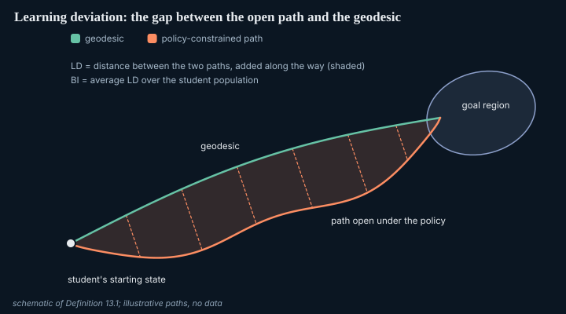
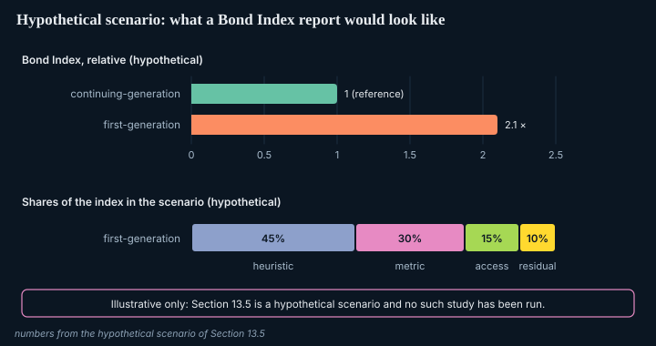

Chapter 13: The Educational Bond Index
Part IV: Structural Inequality
“When ‘structural inequality’ has a number, it stops being an opinion and becomes a measurement.”
THE MEASUREMENT
The Educational Bond Index BI(P, S) quantifies the expected deviation between the learner’s geodesic on the full manifold and the path mandated or enabled by institutional policy P for student population S. It transforms “structural inequality” from a philosophical claim into an empirical measurement, computed from data that every university already collects.
13.1 Definition
Definition 13.1 (Educational Bond Index). The Educational Bond Index for institutional policy $P$ and student population $S$ is:
$$\text{BI}(P, S) = \mathbb{E}_{\mathbf{x} \sim S}\left[\text{LD}(\gamma_P^*(\mathbf{x})) - \text{LD}(\gamma_\mathcal{L}^*(\mathbf{x}))\right]$$
where $\gamma_P^*(\mathbf{x})$ is the policy-constrained path (the learning trajectory available to a student at position $\mathbf{x}$ under the institution’s rules, resources, and norms), $\gamma_\mathcal{L}^*(\mathbf{x})$ is the geodesic (the optimal trajectory on the full manifold), and $\text{LD}(\gamma)$ is the total learning deviation — the integrated distance between the actual path and the geodesic, summed across all six dimensions.
The Bond Index measures the gap between what is and what could be. A high BI means that the institutional policy forces students onto paths that are substantially longer, more costly, and more inefficient than their geodesics. A BI of zero means the policy imposes no deviation: students are free to follow their optimal paths. No real institution achieves BI = 0, but the gap between actual BI and zero is the quantification of structural inefficiency.
13.1.1 What the Bond Index Is Not
The Bond Index is not a measure of student quality. It does not say “these students are better or worse than those students.” It says “this policy imposes more or less deviation on these students.” The deviation is a property of the policy, not of the students. A high BI for first-generation students under a given admissions policy does not mean first-generation students are deficient; it means the policy is poorly calibrated for their manifold positions.
The Bond Index is not an opinion. It is computed from measurable quantities: course availability (from institutional data), class sizes (from registrar records), student trajectories (from transcript data), and metric estimates (from learning analytics). The computation may involve estimation error, but the quantity being estimated is empirically defined, not philosophically asserted.

Figure 13.1. A schematic of the quantity inside the Educational Bond Index (Definition 13.1 and Section 13.3.3), with illustrative paths and no data. The geodesic is the least-cost path from the student’s starting state to the goal region, and the other curve is the path the institution’s policy leaves open. The learning deviation is the distance between the two paths added up along the way, drawn as the shaded area. The index is its average over a student population.
13.2 What the Bond Index Detects
13.2.1 Funding Disparities
Schools with fewer resources offer fewer courses (fewer edges on the manifold), larger class sizes (lower heuristic field quality — each student receives less individual guidance), and fewer support services (higher effective curvature for struggling students). The Bond Index captures this:
$$\text{BI}(P_{\text{low-fund}}, S) > \text{BI}(P_{\text{high-fund}}, S)$$
for any student population $S$. The inequality holds because fewer edges mean longer paths, and lower heuristic quality means less efficient navigation. The funding disparity is measurable as excess path cost: the additional educational effort required to reach the same goal region from the same starting position, simply because the institutional infrastructure is sparser.
13.2.2 Tracking and Ability Grouping
Academic tracking constrains students to submanifolds — reduced-dimension regions where certain paths are unavailable. Students placed in a “basic” track have access to a subset of the courses available to students in the “advanced” track. The removed courses are removed edges on the manifold.
The Bond Index for tracked students is higher not because they lack capacity but because the track removes edges they would have traversed. A student with potential for advanced mathematics who is placed in the basic track has a longer path to a STEM degree than the same student would have in the advanced track, because the basic track does not offer the prerequisite courses.
$$\text{BI}(P_{\text{basic track}}, S) > \text{BI}(P_{\text{advanced track}}, S)$$
The inequality is structural: it arises from the topology of the available manifold (which courses exist), not from the capacity of the students.
13.2.3 The First-Generation Penalty
The missing heuristic field (Chapter 6) is measurable through the Bond Index. First-generation students navigate the manifold without the inherited heuristic $h_P$ that continuing-generation students receive. The absence of the heuristic produces longer paths: more credits to degree, more course changes, more late withdrawals, more semesters in non-productive exploration.
$$\text{BI}(P, S_{\text{first-gen}}) > \text{BI}(P, S_{\text{continuing-gen}})$$
The inequality holds even when both populations have the same starting position on the manifold (the same $d_1$ through $d_6$). The difference is in the navigation, not in the capacity. The Bond Index separates capacity from navigation: it measures the deviation imposed by the navigational environment, not by the student’s inherent ability.
13.2.4 Demographic Disparities
If instructional practices at under-resourced schools focus exclusively on $d_1$ (domain recall, testable by standardized tests) while neglecting $d_3$ (metacognition) and $d_5$ (transfer), then students from these schools carry lower $d_3$ and $d_5$ into college. Their geodesics through college are longer: the curvature between their starting position and the goal region is higher because they must develop $d_3$ and $d_5$ in college rather than arriving with them.
$$\text{BI}(P_{\text{college}}, S_{\text{under-resourced}}) > \text{BI}(P_{\text{college}}, S_{\text{well-resourced}})$$
This inequality arises not from college policy alone but from the interaction between college policy and pre-college preparation. The Bond Index at the college level reflects the accumulated geometric consequences of K-12 policy: students whose K-12 education developed only $d_1$ arrive at college with a metric that makes college more expensive, and the excess cost is measurable.
13.3 Computing the Bond Index
The Bond Index is computable from data that most institutions already collect. The computation proceeds in three steps:
13.3.1 Step 1: Estimate the Learner Metric
The $6 \times 6$ metric tensor must be estimated from observed student trajectories. Chapter 16 describes several methods:
- Trajectory clustering from LMS data identifies students with similar paths and estimates the between-cluster distances as metric values.
- Multi-dimensional IRT estimates a vector of ability parameters from response patterns, providing coordinate estimates on the manifold.
- Learning curve analysis estimates local curvature from the shape of the performance-vs.-practice curve.
The metric estimate is the most demanding step computationally and the most uncertain statistically. The Bond Index’s accuracy depends on the metric estimate’s accuracy.
13.3.2 Step 2: Compute the Geodesic
Given the estimated metric, the geodesic from each student’s starting position to the goal region is computed by numerical integration of the geodesic equation:
$$\frac{d^2 x^k}{dt^2} + \Gamma^k_{ij} \frac{dx^i}{dt} \frac{dx^j}{dt} = 0$$
where $\Gamma^k_{ij}$ are the Christoffel symbols computed from the estimated metric. The geodesic computation requires the metric at every point along the path, which is estimated from the data.
13.3.3 Step 3: Compute the Deviation
The learning deviation for each student is the integrated distance between the student’s actual path (observed from transcript data) and the computed geodesic:
$$\text{LD}(\gamma_{\text{actual}}) = \int_0^T d_\mathcal{L}(\gamma_{\text{actual}}(t), \gamma^*(t)) \, dt$$
The Bond Index is the expected deviation across the student population:
$$\text{BI}(P, S) = \frac{1}{|S|} \sum_{s \in S} \text{LD}(\gamma_{\text{actual}}^{(s)})$$
13.4 Decomposing the Bond Index
The Bond Index decomposes into sources of deviation:
$$\text{BI}(P, S) = \text{BI}_{\text{access}} + \text{BI}_{\text{heuristic}} + \text{BI}_{\text{metric}} + \text{BI}_{\text{residual}}$$
- $\text{BI}_{\text{access}}$: Deviation due to missing courses, limited schedule options, and unavailable support services (missing edges on the manifold).
- $\text{BI}_{\text{heuristic}}$: Deviation due to absent or miscalibrated heuristic guidance (poor advising, missing mentoring, gauge-variant teaching).
- $\text{BI}_{\text{metric}}$: Deviation due to metric mismatch between the student’s actual metric and the assumed metric of the curriculum (one-size-fits-all instruction).
- $\text{BI}_{\text{residual}}$: Deviation not explained by the above sources (measurement error, unmodeled factors).
The decomposition is practically useful: it identifies which sources of deviation are largest, enabling targeted intervention. If $\text{BI}_{\text{heuristic}}$ dominates, the intervention is improved advising and mentoring. If $\text{BI}_{\text{access}}$ dominates, the intervention is more courses and support services. If $\text{BI}_{\text{metric}}$ dominates, the intervention is personalized instruction.
13.5 Alex Computes the Bond Index
This section is an illustrative scenario: the study and its numbers are hypothetical, and no such study has been run (Section 18.5). Alex, now a graduate student in education, designs a study using institutional data from three semesters of introductory engineering courses at the university. Alex has access to de-identified LMS data (Canvas interaction logs), transcript data (course sequences and grades), and demographic data (first-generation status, high school type, SES indicators).
Alex clusters student trajectories by LMS interaction patterns and identifies four distinct learner profiles — all with average GPAs within 0.2 of each other:
- Profile 1 (Formal-first): High $d_1$, low $d_2$. These students read the textbook, watch lectures, and perform well on written exams. They struggle with lab assignments and design projects.
- Profile 2 (Procedural-first): High $d_2$, low $d_1$. These students excel at labs and projects but struggle with written exams. This is Alex’s profile.
- Profile 3 (Metacognitive): High $d_3$, moderate $d_1$ and $d_2$. These students use study groups, seek help early, and show steady improvement. Their exam scores improve over the semester.
- Profile 4 (Creative): High $d_6$, variable $d_1$ and $d_2$. These students propose original solutions on design projects but score inconsistently on standardized assessments.
The GPA is identical across profiles ($\approx 3.0 \pm 0.2$). The learner states are geometrically distant: the average inter-profile distance on the estimated manifold is $\approx 0.65$ on a $[0, 1]$ scale. The GPA Irrecoverability Theorem, illustrated in Alex’s hypothetical data.
Alex then computes the Bond Index for the engineering program, stratified by first-generation status:
$$\text{BI}(P_{\text{engineering}}, S_{\text{first-gen}}) = 2.1 \times \text{BI}(P_{\text{engineering}}, S_{\text{continuing-gen}})$$
First-generation students experience 2.1 times the learning deviation of continuing-generation students — not because they are less capable, but because their geodesics are longer (different starting positions), their heuristic field is sparser (no inherited navigation), and the institutional path is calibrated for a different metric.
Alex decomposes the Bond Index: - $\text{BI}_{\text{heuristic}} = 45\%$ of total (first-generation students lack navigational guidance) - $\text{BI}_{\text{metric}} = 30\%$ of total (the curriculum assumes a formal-first metric that disadvantages procedural-first students) - $\text{BI}_{\text{access}} = 15\%$ of total (fewer support services available to first-generation students) - $\text{BI}_{\text{residual}} = 10\%$
The decomposition suggests that the most impactful intervention is improved heuristic field support (mentoring, proactive advising, navigational workshops) — a hypothetical finding that aligns with the educational literature on first-generation student support programs.
Alex presents the result to the dean. For the first time, “structural inequality in the engineering program” has a number. The number is 2.1. The number decomposes into actionable sources. The number is computed from data the university already collects. The political becomes empirical.

Figure 13.2. The hypothetical scenario of Section 13.5, in which no study has been run and every number is invented for illustration. Top: in the scenario the Bond Index of first-generation students is 2.1 times that of continuing-generation students, drawn with the continuing-generation value as 1. Bottom: the shares into which the scenario decomposes the index, 45 percent heuristic, 30 percent metric, 15 percent access and 10 percent residual.
Summary
This chapter has defined the Educational Bond Index, set out its computation, and illustrated its application with a hypothetical study — the measure of structural inequality in education. The Bond Index quantifies the expected deviation between the student’s geodesic and the policy-constrained path, capturing funding disparities, tracking effects, first-generation penalties, and demographic disparities in a single numerical framework. The computation uses trajectory data, metric estimates, and geodesic computations to produce a number that transforms “structural inequality” from a philosophical claim to an empirical measurement. The decomposition into access, heuristic, metric, and residual components identifies actionable sources of inequality. The Bond Index is the geometric framework’s primary tool for educational equity analysis.
-
The Bond Index construction follows the general Bond Index from Geometric Ethics (Bond, 2026b, Ch. 16), adapted for educational institutions. The educational version uses six dimensions rather than nine and replaces clinical-moral boundaries with prerequisite and institutional boundaries. ↩